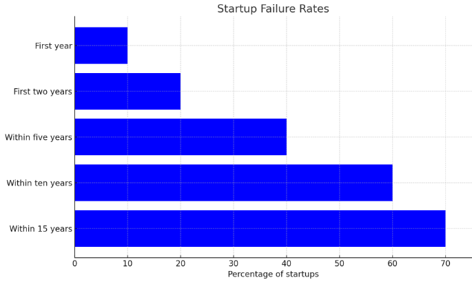
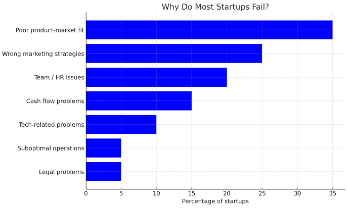
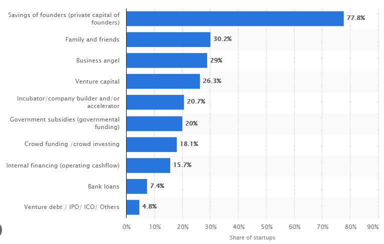

Study of Startup Business: Failures and Suggestions
Startups face numerous challenges that can lead to failure if not addressed effectively. Here are five critical factors contributing to startup failures and suggestions for overcoming them:
1. Legal Compliance Challenges:
Startup failures in the UK often stem from legal compliance issues, including incorrect filing of essential documents, ignorance of regulatory obligations, and insufficient measures to address legal risks. Research by the UK Law Society indicates that 25% of startups fail due to legal challenges. Additionally, findings from the UK Department for Business, Energy & Industrial Strategy show that a significant portion of small businesses spend considerable time annually dealing with federal regulations. Prioritising legal compliance, seeking professional legal counsel, and implementing robust compliance mechanisms are crucial for startups to mitigate risks and enhance their long-term success within the UK business landscape.
2. Insufficient Financial Management:
Financial mismanagement, including ineffective budgeting and poor financial planning, contributes significantly to startup failures. Studies have shown that a lack of knowledge about effective financial management and budgeting is a prevalent issue among startup founders. Additionally, cost pressures, such as increased business rates, inflation on raw materials, staff costs, and energy bills, can exacerbate financial challenges for small and micro-businesses.
According to a report by the UK Federation of Small Businesses, 82% of startup failures are attributed to cash flow problems. Moreover, a study by UK Finance found that 61% of small businesses struggle with cash flow management, indicating the widespread prevalence of financial management challenges among startups.
3. Ineffective Legal Compliance:
Many startups struggle with legal compliance issues, including the inability to file necessary legal documents or financial statements correctly. Failure to adhere to legal requirements can result in penalties, lawsuits, and regulatory hurdles that impede business operations and lead to eventual failure.
A survey conducted by the UK Department for Business, Energy & Industrial Strategy found that 43% of small businesses spend at least 40 hours per year dealing with federal regulations, highlighting the time and resource burden associated with legal compliance. Additionally, research by the UK Law Society found that 1 in 4 startups fail due to legal challenges, underscoring the significant impact of legal compliance on startup success.
4. Inadequate Marketing Strategies:
Effective marketing is essential for startups to attract customers and generate revenue. However, many startups struggle to develop consistent, measurable marketing plans tailored to their target audience. Moreover, inadequate marketing budgets and a lack of expertise in marketing and promotion further compound these challenges, hindering startups' ability to reach and engage customers effectively
According to a survey by the UK Chartered Institute of Marketing, 63% of marketers cite generating traffic and leads as their top marketing challenge, indicating the widespread struggle with attracting customers. Additionally, research by the UK Office for National Statistics found that companies that prioritise marketing efforts are more likely to achieve strong revenue growth compared to those that do not invest in marketing.
5. Over-reliance on a Few Clients:
Relying heavily on a small number of clients for a significant portion of revenue poses a substantial risk to startups. While securing large clients can initially boost turnover and profits, it can also create vulnerabilities if those clients reduce or withdraw their business.
According to a study by the UK Office for National Statistics, 59% of businesses that experience a major data loss go out of business within six months. This highlights the vulnerability of businesses to disruptions in client relationships. Moreover, research by UK Federation of Small Businesses suggests that diversifying the client base can increase revenue stability and reduce risk for businesses.
In conclusion, startups must address these critical issues to improve their chances of success and long-term sustainability. By prioritising focus, effective financial management, legal compliance, strategic marketing, and client diversification, startups can navigate challenges more effectively and position themselves for growth and resilience in today's competitive business environment. Collaboration with stakeholders, access to resources and support networks, and proactive government interventions can further facilitate startup success and contribute to economic development and innovation.